Let's take a look at what everyone came up with this week.
Building Unimaginable Shapes
"What kind of forms could we design if we wouldn't work with references any more? If we had no bias, if we had no preconceptions... What kind of forms could we design if we could free ourselves from our experience? If we could free ourselves from our education... What would these unseen forms look like?"
from Michael Hansmeyer's TED talk on generative systems
Computer as Drawing Machine: Historical Generative Art
Pre-digital Computational Art: Ben Laposky's Oscillons
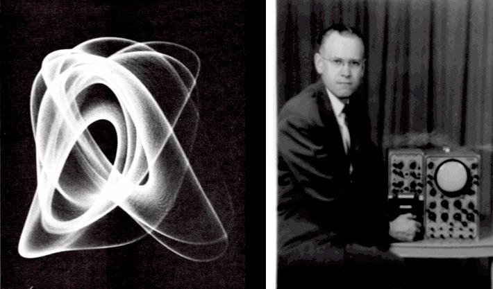
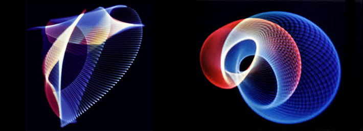
Oscillon series, early 1950s by Ben Laposky
A point of reference
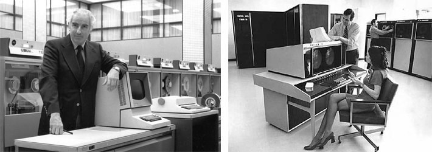
Because it's easy to forget the state of computing in the 1960s
Ivan Sutherland's Sketchpad, 1961
Sutherland's Sketchpad was a precursor to all modern interactive computer graphics systems.
"3N" Algorists Group (Georg Nees, Frieder Nake, and A. Michael Noll)
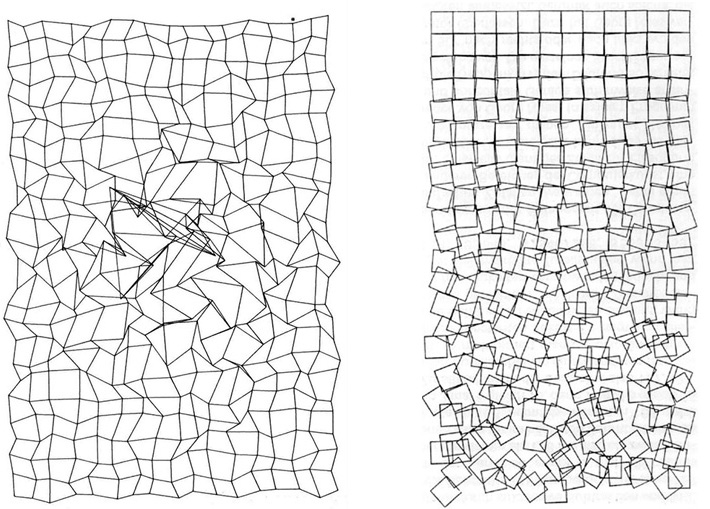
Untitled, 1965-1968 and Schotter, 1968 by Georg Nees
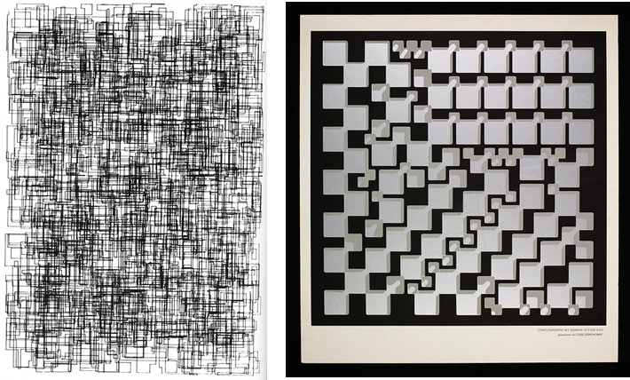
Untitled (Micro Innovations), 1967 and Sculpture, 1968 by Georg Nees
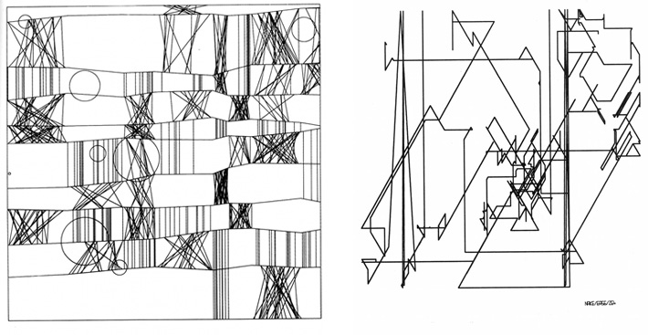
NR. 2 ("Klee"), 1965 and Polygon Course No. 7, 1965 by Frieder Nake
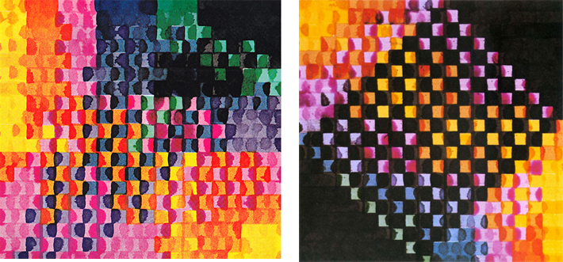
Matrix Multiplication Series, 1967 by Frieder Nake
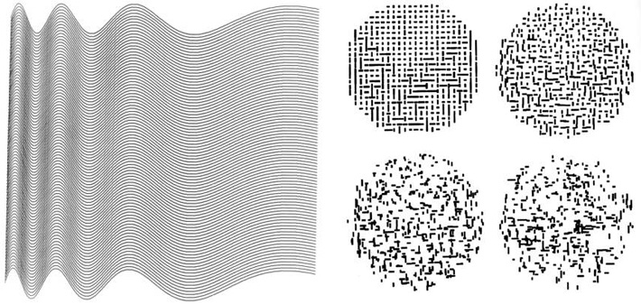
Ninety parallel sinusoids with linearly increasing period, 1964 and Composition with Lines (after Mondrian), 1964 by A. Michael Noll
Generative art relies on systems (often random or autonomous processes) to produce unexpected results. Some early generative and rule-based systems in the visual arts include:
Jasper Johns' rules for making
"It's simple, you just take something and do something to it, and then do something else to it. Keep doing this, and pretty soon you've got something"
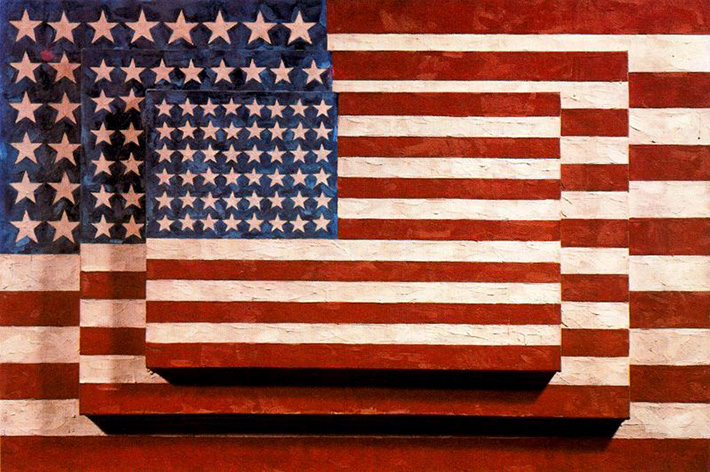
Three Flags, 1958 by Jasper Johns
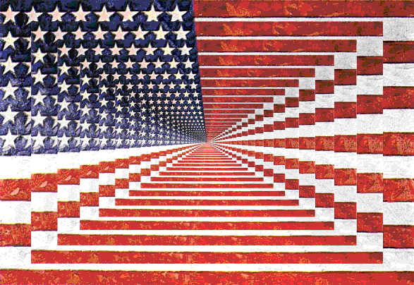
Years later, someone else did something else to it... Enduring Freedom, 2008 by Ramsay Stirling
Yoko Ono's Instructional Fluxus work
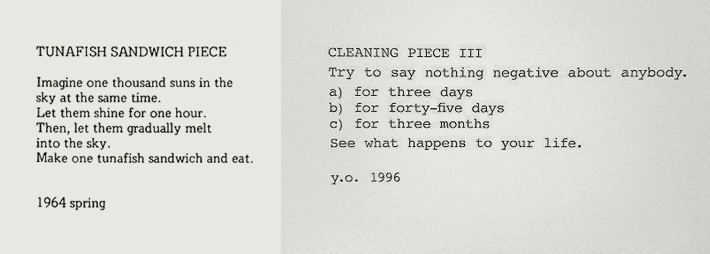
Two instructional pieces by Yoko Ono.
John Cage's prepared piano (Late 1930s~)
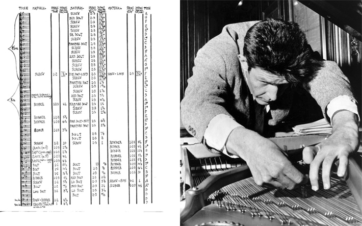
A prepared piano has its sound altered by placing objects between a piano's strings and hammers. Cage is often credited with this discovery, though there have been a number of variations on this technique since the 18th century!
Jean Tinguely's Machines
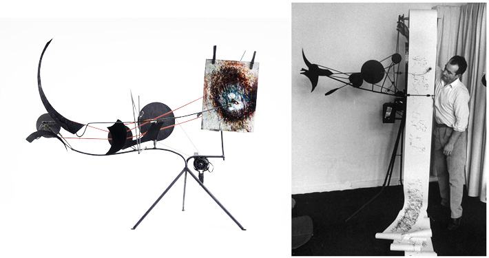
Metamatics from the 1950s by Jean Tinguely
Homage to New York performance at MOMA, 1960 by Jean Tinguely
Sol Lewitt
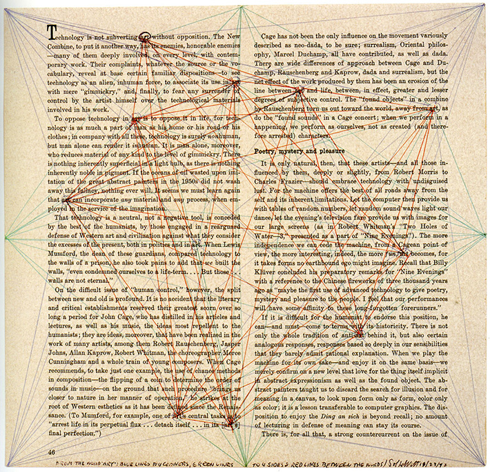
From The Word(s) ‘Art’; Blue Lines To Four Corners, Green Lines To Four Sides, And Red Lines Between The Words, 1972 by Sol Lewitt
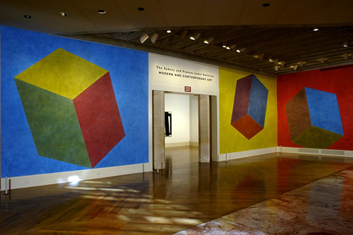
Wall Drawing 541, 2000 by Sol Lewitt
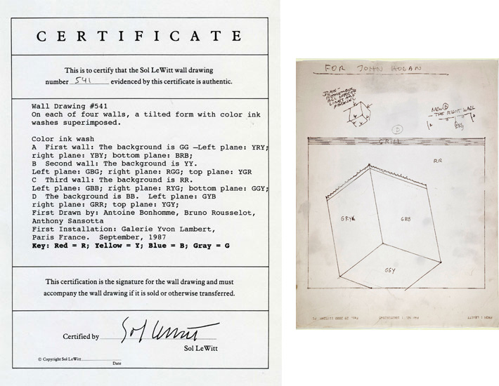
Wall Drawing 541 instructional documents
(Oh, and take a look at the person in the bottom left corner of this picture. Look familiar?)
Casey Reas' interpretations of Lewitt's Wall Drawings
In 2004, Whitney commissioned interpretations of Lewitt's wall drawings in code for the {Software} Structures online exhibition. Requires Java plugin to view online, but the code can still be run in Processing. More here
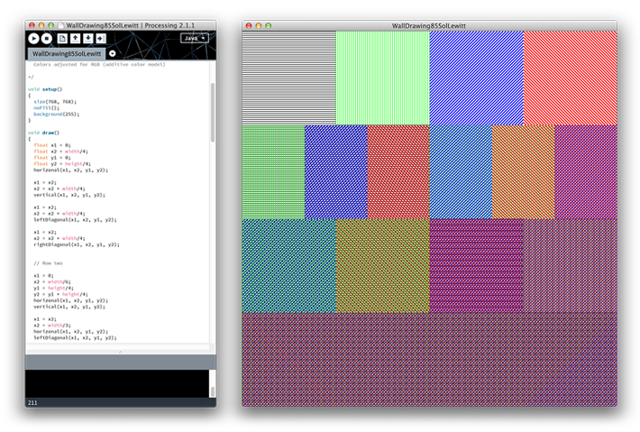
Drawing 85 (after Sol Lewitt), 2004 by Casey Reas
Processing 2: Movement + Rules
Today, we'll be making things move around in different ways, establishing our own conditional rules to control what is happening on screen, and working with variables as a means of storage.
"Processing is a programming language, development environment, and online community. Since 2001, Processing has promoted software literacy within the visual arts and visual literacy within technology. Initially created to serve as a software sketchbook and to teach computer programming fundamentals within a visual context, Processing evolved into a development tool for professionals. Today, there are tens of thousands of students, artists, designers, researchers, and hobbyists who use Processing for learning, prototyping, and production."
description from processing.org
Creative Coding, Poetic Computation
"The main challenge is trying to create work that touches people at an emotional level, as opposed to them thinking about the technology or wondering how it was made. Making poems, not demos, is how we refer to it, i.e. making work that is like a poem, short yet dense, re-tellable, rhythmic, meaningful as opposed to a demo that just feels like technology for technology's sake."
Zach Lieberman
Today, we'll be getting our feet wet with the Processing environment and language– drawing shapes, adjusting their attributes, and working with images.
Later this week, I'll send everyone a link to an entrance survey for the class. This will help me get to know a little more about your interests and abilities as we head into the semester.
Please take a few minutes to fill out the survey honestly.
Homework 1: Translation/Composition
Use Processing to create a composite image structured through code.
Let your own interests and curiosity define your aesthetic decisions.
In addition to the material introduced in class today, I would like you to research and utilize something from either the Curves or Vertex subheading in the Processing Reference
We'll start class next week by taking a brief look at what everyone comes up with.
Reading 1: Medium
Medium from Abstracting Craft: The Practiced Digital Hand, by Malcolm McCullough (link)
I'd like to hear your thoughts on the potential of code as creative medium in 2 weeks.


{kind=link}
{kind=link}